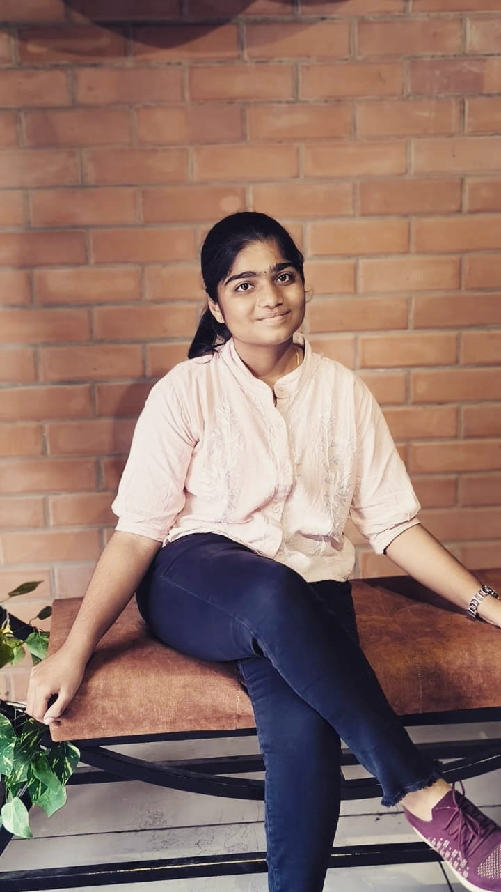

Passionate about CyberSecurity, Technology Innovation, Forensics and Entrepreneurship.
A motivated second-year B.E. CyberSecurity student with an interest in cybersecurity, digital forensics, hackathons and technology innovation. I enjoy learning new technologies, developing practical solutions and exploring ideas that can create a positive social impact. I am also interested in entrepreneurship and building technology-driven projects.
Rathinam Technical Campus, Coimbatore
Python • C • Java • HTML • CSS
VS Code • Git • GitHub • MySQL
CyberSecurity • Digital Forensics • Web Development
Problem Solving • Teamwork • Communication • Innovation
Tagline: “Every Meal Saved is a Smile Shared”
FoodBridge is a technology-driven platform designed to reduce food waste by connecting restaurants, cafés, function halls and other surplus food sources with NGOs and volunteers who can help redistribute the food to people in need.
Technologies: HTML • CSS • JavaScript • Python Flask • MySQL • REST API • Bootstrap • Google Maps API
Participated in hackathons and technology-focused activities involving problem solving, teamwork, cybersecurity concepts and developing practical technology solutions.
Languages: English, Tamil
Location: Coimbatore, Tamil Nadu
Current Year: 2nd Year B.E. CyberSecurity